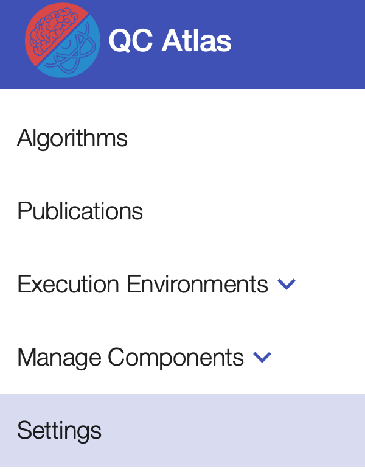
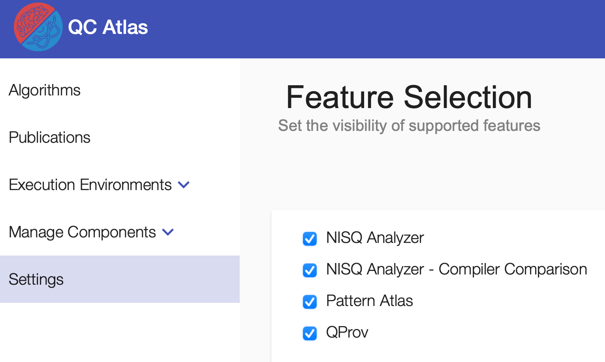

Settings
Settings can be found by navigating to Settings in the navigation sidebar.

Note
The visibility of Settings and related functionalities can be en-/disabled by adapting showSettings under config/default-config.json in the cloned quantil-docker repository before running the docker-compose.
Feature Toggling
For hiding/showing the UI components offering the features of NISQ Analyzer, Pattern Atlas, and QProv, click the related checkboxes.
